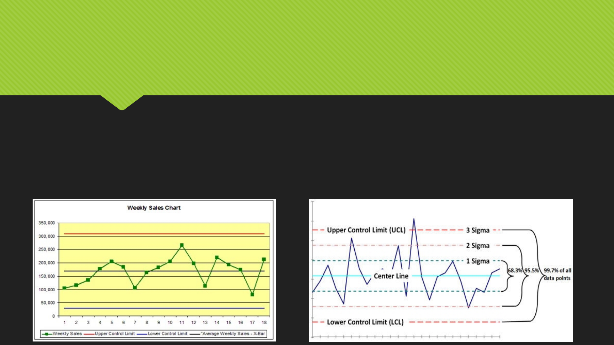
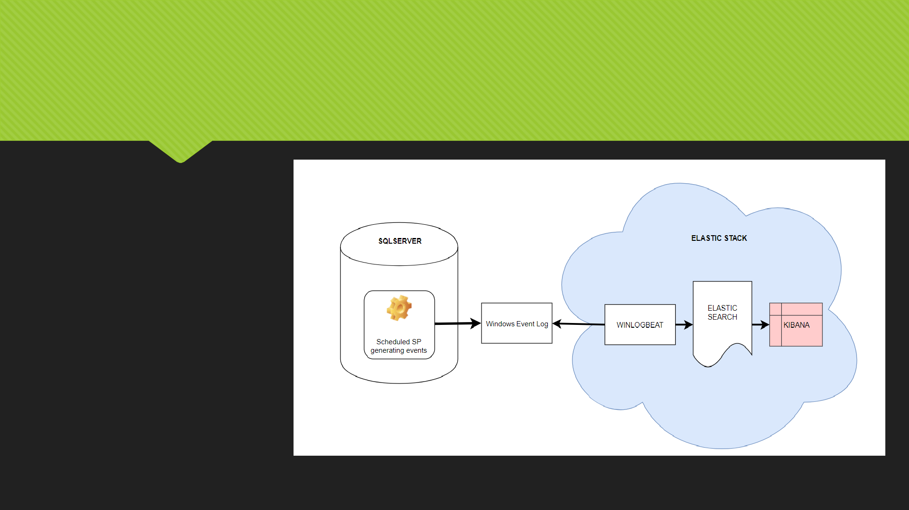

Get your ETL flow under
statistical process control
Pavel Prudky 14.4.2018

Introduction
Who am I ? Who am I not ?
What are the possible reasons for building this solution ?
ETL Processing issues !!!
What are we building ?
Custom Data - driven alerting project based on 3 sigma rule calculation
Row counts and Processing durations per file per specific staging areas
Why and when to choose this solution ?
If we want to stay on top of things
If we need to manage hypercare period for a specific customer
If we like building our custom solutions where we fully define all the logic
If we need this now
If ElasticSearch already installed

Statistical process control and ETL logging
Theoretical statistical process control and the 3 sigma rule
Three-sigma limit (3-sigma limits) is a statistical calculation that refers to data within three standard deviations
from a mean. In business applications, three-sigma refers to processes that operate efficiently and produce
items of the highest quality. The so-called three-sigma rule of thumb expresses a conventional heuristic that
nearly all values are taken to lie within three standard deviations of the mean, and thus it is empirically useful
to treat 99.7% probability as near certainty.

10000 ft overview of the proposed solution
High level summary
1.
1.
2.
2.
3.
3.
4.
4.
5.
5.

Stepping in a bit deeper inside the
components used
Overview of the components used:
SQL Server 2017 Dev Edition
Why Dev Edition and not SQL Express? Limitations wrapup
Winlogbeat
A module inside of the Elastic stack. Winlogbeat ships Windows event logs to Elasticsearch or Logstash. You can install it as a
Windows service. It can capture event data from any event logs running on your system. For example, you can capture events
such as:
application events
hardware events
security events
system events
Elasticsearch
Elasticsearch is a distributed, RESTful search and analytics engine capable of solving a growing number of use cases. As the heart
of the Elastic Stack, it centrally stores your data so you can discover the expected and uncover the unexpected.
Kibana
Kibana is a made up word. Kibana will be used as our ElasticSearch visualization tool for the events we will be looking for. This tool
has many features out of which we’ll utilize only the Time series chart to get us started (maybe also a simple dashboard) , but I
expect , that in case this solution got your interest, you’ll want to do more with this tool.
The fun part : let’s go build this
Demonstration
Start the services / apps ( SQL Server , SQL Agent, Winlogbeat,
ElasticSearch, Kibana )
Revision of the SQL code
Revision of the raised events in Event Log Viewer
Winlogbeat.yaml – filtering out only the needed events,
Elasticsearch endpoint check
Kibana index filters, Timeline, Dashboard
Let’s start raising events…
Wrapping up
Pros
With just a few hours of work, you can get a lot of control in your data
processing framework, you can definitely be informed in advance when
something fails and react in advance as well. There isn’t a very steep learning
curve in this case, things seem to work well with plenty of documentation
available online.
In case your company has ElasticSearch cluster in place, you will be able to
snap-in with a rather small effort needed
You can build on top of this. This is really just a first step that you can align to
your needs. You can enhance this with other events, for example sending jobs
with failed statuses, extend this to start raising events regarding jobs that are
long-running even before they finish
You can easily utilize the rest of the Elastic Stack components to extend this
solution

Wrapping up
Cons
This solution works well in an environment, where you already have a lot of ETL
logging information collected from the past, where one slightly different size
file or some network glitch causing longer stage processing doesn’t skew your
mean and also the 3 sigma control limits.
You need to have a little more in-depth knowledge of Elasticsearch in case
your team will be managing this pipeline
For more in depth analytics, Kibana has a slight learning curve as well
Kibana is not perfect

Wrapping up
Other solutions to this problem
Use Python script to query out of the logger_history table SCP outliers and pass
them directly to ElasticSearch webservice
Sumologic and other Log monitoring and analysis frameworks ( in case it has
outlier detection )
My tips
Make sure you send from Winlogbeat to Elasticsearch only the events YOU are
generating
Make sure you have enough data collected to get meaningful results out of
this project. Calculations Data quality will rise over time so don’t be worried if
positive outlier events show up
Sell this solution well and react to the raised events

Q&A
Thank you very much for your attention
Please feel free to ask questions
Pavel Prudky
prudkypav@gmail.com
Linkedin
datahappy.wordpress.com <- download the solution 15.4